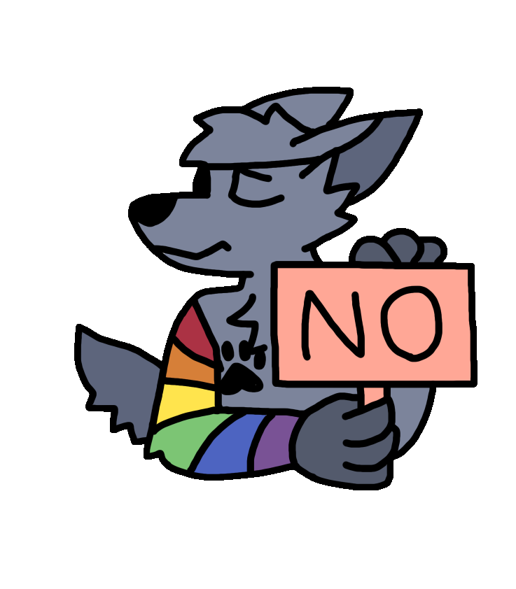
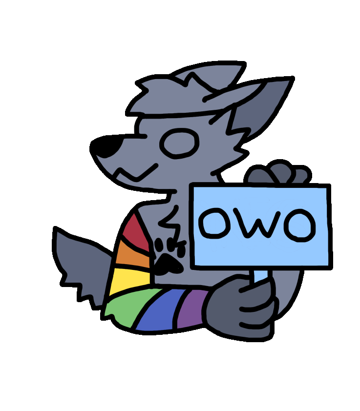

The Paw Kingdom is a furry community server rich with wholesomeness, love and care from its community. We offer a safe haven for all our members, regardless of whether our members are furry, lgbt or not. We try to accommodate everyone the best we can, and have made that our sole mission.

The Paw Kingdom was started by its current owners Toothy and MiataBoy in May 2020, as a safe haven for furries and lgbt members. We wanted to give everyone a place they could enjoy, and meet people that share interests. We were deeply passionate about TPK, and have been working on it day after day to ensure it was exactly what we liked, and when we got members, that it was also what they liked.

Over the years, we have gained steady growth and have tried our best to improve the server constantly for the sake of our members. In 2021, we developed a bot (exorium) that provided social interaction commands such as hugging, cuddling and booping. We were later forced to shut it down as a result of discord's slash command system.

In 2023, we reached over 900 members and got a mascotte along with art of this mascotte from Josi named Paw, the same one you see on this page. We also decided to develop another, smaller version of exorium that supports discord's latest systems. Now, our server offers many one-of-a-kind experiences that we will always try to give everyone.